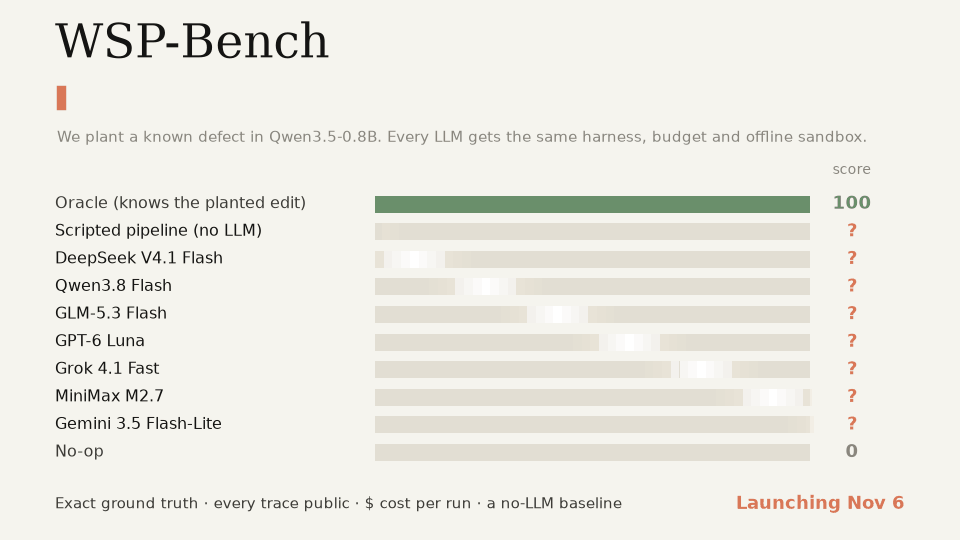

Weight-space programming, measured
Who is the best weight-space programmer?
We plant known defects in Qwen3.5-0.8B. Every LLM gets the same harness, budget, and offline sandbox. Repairs are scored against exact ground truth; every trace and dollar is public.

Leaderboard
Overall score is the mean across instances. Confidence intervals bootstrap instances.
Results pending
Leaderboard launching Nov 6
Official runs will appear here with bootstrap confidence intervals, costs, token counts, GPU calls, and full public traces.
Initial model roster
- DeepSeek V4.1 Flash
- Qwen3.8 Flash
- GLM-5.3 Flash
- MiniMax M2.7
- GPT-6 Luna
- Grok 4.1 Fast
- Gemini 3.5 Flash-Lite
- Scripted baseline
- Oracle
- No-op
Score vs. cost
Higher and farther left is better. The dashed line marks the model Pareto frontier; cost uses a logarithmic axis.
What this does not show
A benchmark result is evidence about performance under these rules—not a broader metaphysical claim.
The planted failures are controlled tasks with exact ground truth, not a claim about every real model failure.
A high score means the model runs a find-direction → edit → verify loop effectively with the supplied tools.
Scores share a fixed budget, but provider pricing, token accounting, and default reasoning modes still matter.